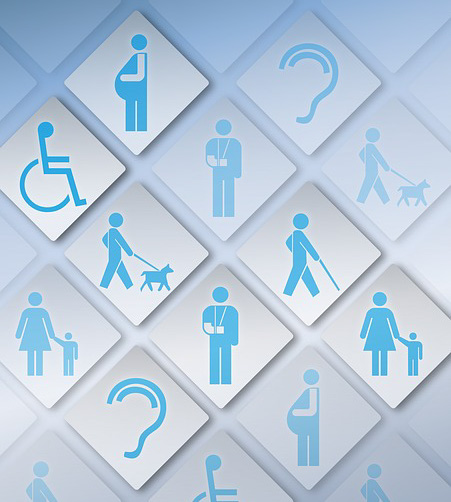

Our Commitment to Accessibility
Accessibility means available to all. We strive to make our work accessible to all individuals and to make that access equal in both content and impact, regardless of technology used. We view the internet as a place for inclusion, allowing for equal access and contribution regardless of race, gender, religion, national origin, age, disibility, or sexual orientation. By creating an environment that fosters inclusiveness, we strive to generate the best perspecitives and insights to create a path to further innovation.
By Renma
Web Users and Web Accessibility
| Disability | Description | Common Barriers | Accessibility Principles to Apply |
|---|---|---|---|
| Auditory | Auditory disabilities relate to a user's ability to hear. They include variying levels of hearing loss in one or both ears. Auditory disabilities can also relate to a person's ability to differentiate sound, such as filtering out background noise to hear what someone is saying. | For audio content such as videos, music, etc.:
|
Perceivable - Provide captions/transcripts for audio and video content. Ensure that all audio/video content has the option to adjust the volume as well as stop/pause/replay options. |
| Cognitive and Neurological | Cognitive/Neurological disabilities are disabilities that affect any part of the nervous system as well as behavioral and mental health disorders. These disabilities affect how users see, hear, move, speak, and understand information. | Barriers differ based on the type of disability. Examples include:
|
Understandable - Ensure that content is not overly complex and provide alternative methods to the same information (e.g. a written summary of a video) |
| Physical | Physical disabilities are those that affect the users ability to control movement or limit their movement. Examples include involuntary movements like tremors, pain from movement like arthritis, and amputation/missing limbs. | Barriers often relate to not providing alternatives to standard mouse-click interactions and include:
|
Operable - Provide the functionality to operate the website with only a keyboard as well as the abilitiy to operate the website with other devices that are not a keyboard. |
| Speech | Speech disabilities affect an individual's ability to produce speech that is understandable to others or voice recognition software and include loundess and clarity of the speech. |
|
Operable - Avoid speech-only interaction and provide contact options that do not require a telephone call. |
| Visual | Visual disabilities affect an individual's sight. They can include difficuty seeing in general, difficulty differentiating or viewing colors, and issues concerning light. | A lot of web content is visual, so the barriers faced by those with visual disabilities can be extensive and include:
|
Perceivable - Order content in a logical way and use high color contrasts. Avoid color-only visual cues. |
Information in table from W3C's Web Availability Iniative